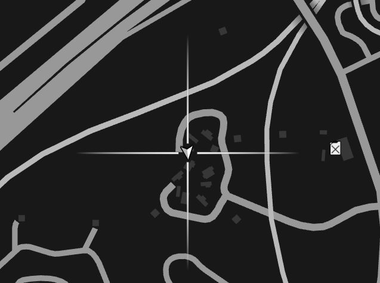
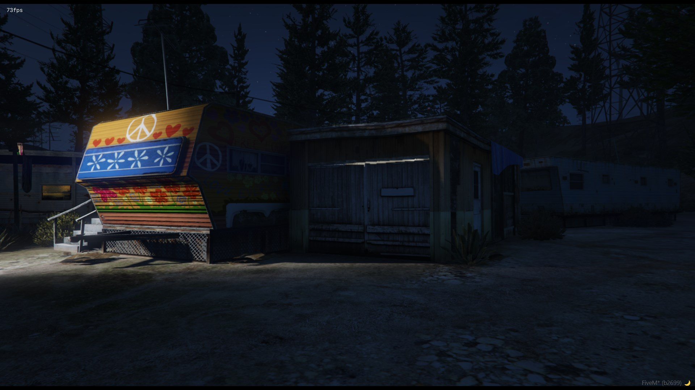
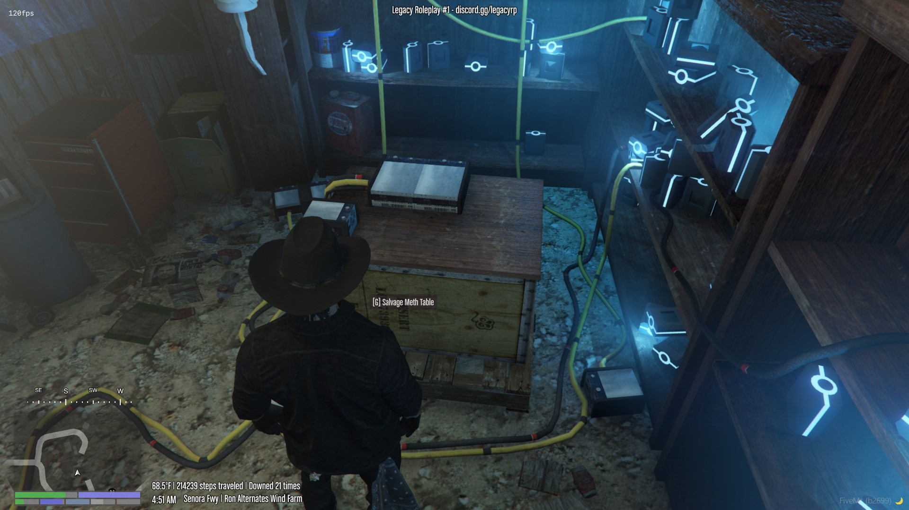

Deconstructing Meth Tables allows you to get some materials in order to cook meth itself, like lithium batteries and acetone.
1. Make sure you have a Meth Table on you
2. Head over to the deconstructing table
**The table can be found inside of the trailer park near the purple dinosaur
Picture of the location on a map:

Picture of the outside

Picture of the table:

Once you got your materials, enjoy! You can return to the main website with the button located at the top left. Or click here!